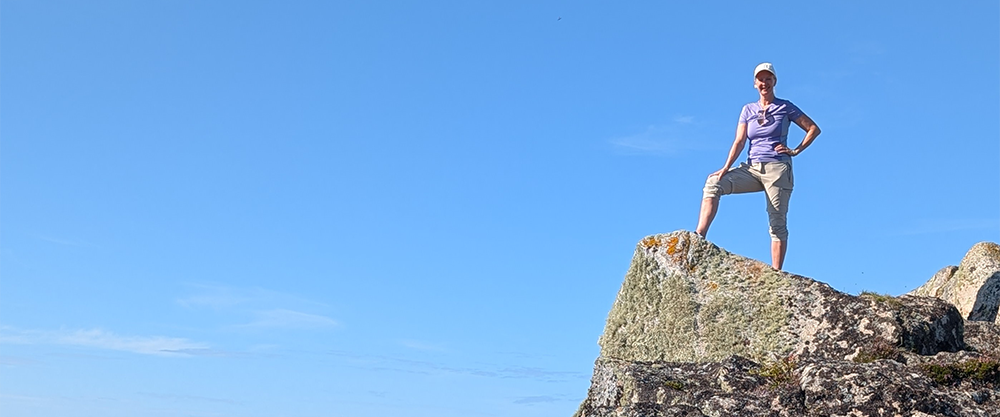
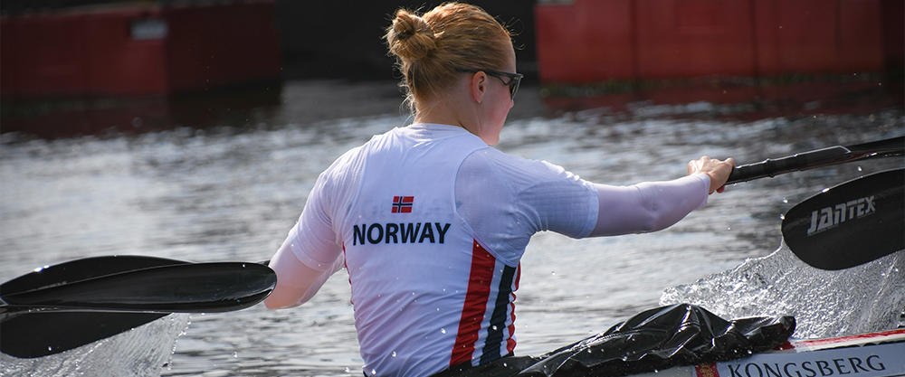
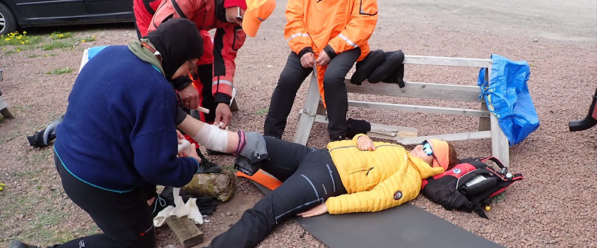
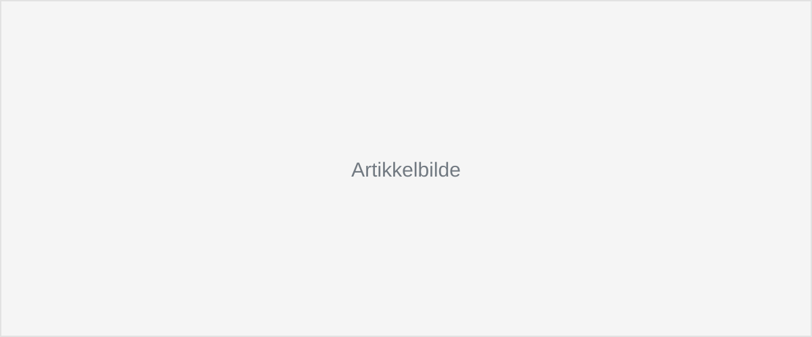

En reportasjesak fra en ukes klubbesøk i Trøndelag. Målet var å synliggjøre hvordan Norges Padleforbund jobber tett med klubbene og offentlige aktører for å forstå lokale behov og utvikle padlemiljøet.
Min rolle: Vinkling, bearbeiding av fagstoff og tekst.

En nyhetssak fra VM i Polen om Norges beste plassering på en olympisk distanse siden 2012. Saken skulle raskt formidle resultatene og løfte fram en sterk norsk prestasjon, og ble publisert sammen med innhold i sosiale medier.
Min rolle: Vinkling, tekst og publisering.

En informasjonssak med et tydelig handlingsmål: få flere klubber til å prioritere førstehjelp og melde seg på kurs. Informasjonen måtte være lett å forstå, samtidig som teksten ledet leseren fram mot en tydelig CTA.
Min rolle: Forfatter

En statistikksak om sommerjobb blant unge, basert på SSBs arbeidsmarkedsstatistikk. Målet var å gjøre statistiske funn tilgjengelige og relevante for et bredt publikum.
Min rolle: Medforfatter.